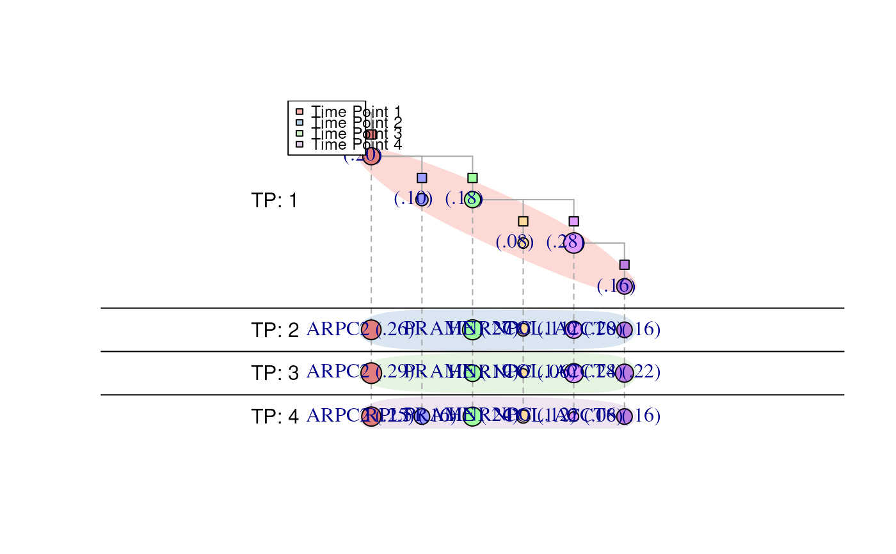

Plot a longitudinal tree inferred by LACE.
longitudinal.tree.plot(
inference,
rem_unseen_leafs = TRUE,
show_plot = TRUE,
filename = "lg_output.xml",
labels_show = "mutations",
clone_labels = NULL,
show_prev = TRUE,
label.cex = 1,
size = 500,
size2 = NULL,
tk_plot = FALSE,
tp_lines = TRUE,
tp_mark = TRUE,
tp_mark_alpha = 0.5,
legend = TRUE,
legend_position = "topright",
label_offset = 4,
legend_cex = 0.8
)Results of the inference by LACE.
If TRUE (default) remove all the leafs that have never been observed (prevalence = 0 in each time point)
If TRUE (default) output the longitudinal tree to the current graphical device.
Specify the name of the file where to save the longitudinal tree. Dot or graphml formats are supported and are chosen based on the extenction of the filename (.dot or .xml).
Specify which type of label should be placed on the tree; options are, "mutations": parental edges are labeled with the acquired mutation between the two nodes (genotypes); "clones": nodes (genotypes) are labeled with their last acquired mutation; "both": either nodes and edges are labeled as specified above; "none": no labels will show on the longitudinal tree.
Character vector that specifies the name of the nodes (genotypes). If it is NULL (default), nodes will be labeled as specified by "label" parameter.
If TRUE (default) add to clones label the correspongind prevalance.
Specify the size of the labels.
Specify size of the nodes. The final area is proportional with the node prevalence.
Specify the size of the second dimension of the nodes. If NULL (default), it is set equal to "size".
If TRUE, uses tkplot function from igraph library to plot an interactive tree. Default is FALSE.
If TRUE (defaul) the function draws lines between timepoints.
If TRUE (defaul) the function draws different colored area under the nodes in different time points.
Specify the alpha value of the area drawed when tp_mark = TRUE.
If TRUE (default) a legend will be displayed on the plot.
Specify the legend position.
Move the mutation labels horizontally (default = 4)
Specify size of the legend text.
An igraph object g with the longitudinal tree inferred by LACE.
data(inference)
clone_labels = c("ARPC2","PRAME","HNRNPC","COL1A2","RPL5","CCT8")
longitudinal.tree.plot(inference = inference,
labels = "clones",
clone_labels = clone_labels,
legend_position = "topleft")

#> IGRAPH 03b9e79 DN-- 25 24 --
#> + attr: name (v/c), branch_level (v/n), branch (v/n), label (v/c),
#> | last_mutation (v/c), TP (v/n), clone (v/n), prevalance (v/n), size
#> | (v/n), size2 (v/n), shape (v/c), label.dist (v/n), label.degree
#> | (v/n), extincion (v/n), color (v/c), coord.x (v/l), coord.y (v/l),
#> | type (e/c), extincion (e/l), label (e/c), name (e/c), lty (e/n)
#> + edges from 03b9e79 (vertex names):
#> [1] T1-ARPC2_2_218249894_C_T->T2-ARPC2_2_218249894_C_T
#> [2] T2-ARPC2_2_218249894_C_T->T3-ARPC2_2_218249894_C_T
#> [3] T3-ARPC2_2_218249894_C_T->T4-ARPC2_2_218249894_C_T
#> [4] T1-PRAME_22_22551005_T_A->T2-PRAME_22_22551005_T_A
#> + ... omitted several edges